I created two new text files in Visual Studio Code called styles.css and a JavaScript file called script.js and then saved them into my local repository.
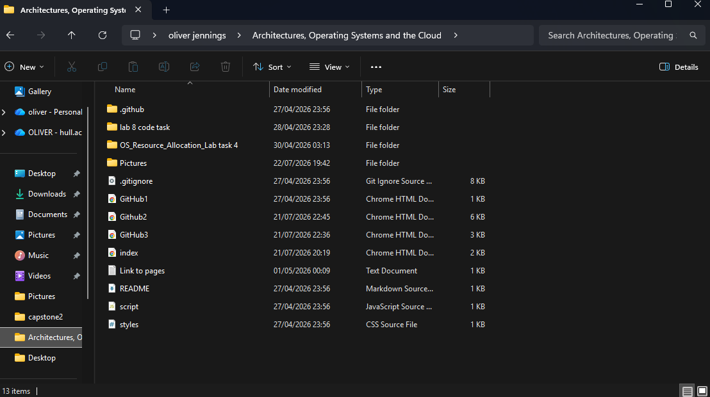
I then referenced the CSS in the header of my main HTML document and the JavaScript at the bottom of the body section. This means that both of my scripts will be able to talk to my HTML documents.
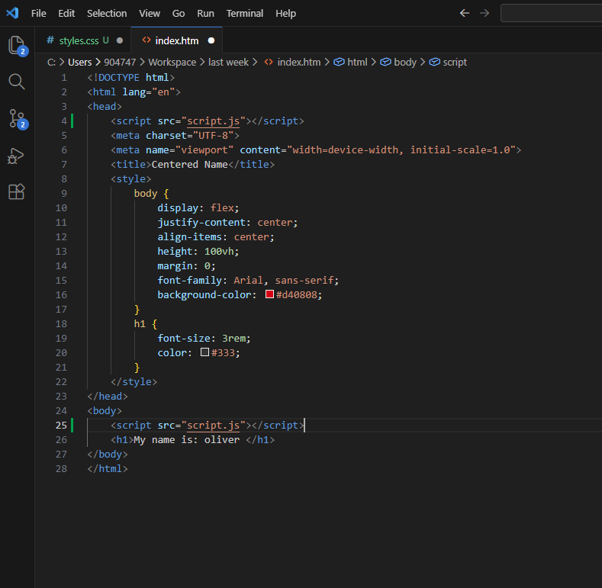
In the first screenshot in this Word document you can also see my working GitHub1 through GitHub3 HTML files. These are important as I will put all of my work onto the website to make the marking process easy and so all of my work can be accessed in one place. These pages are needed so my work is not flooding over my website making it hard to read.
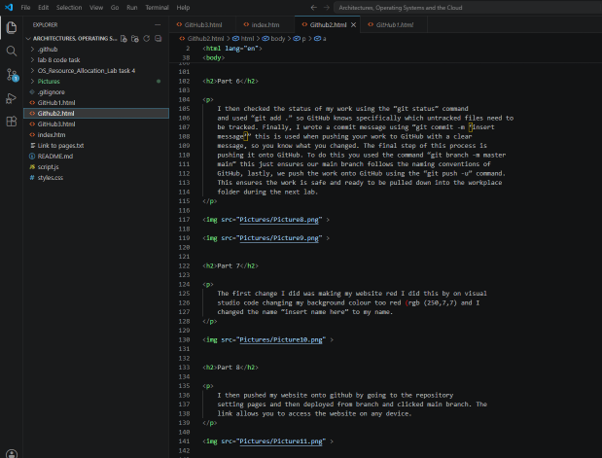
I used CSS to change the colour of the words on my website. The h1 changes all main headings to orange, with the name and description heading doing the same but for a different colour. I did this using the classes to connect them together but only change individual colours without affecting the rest of the website.
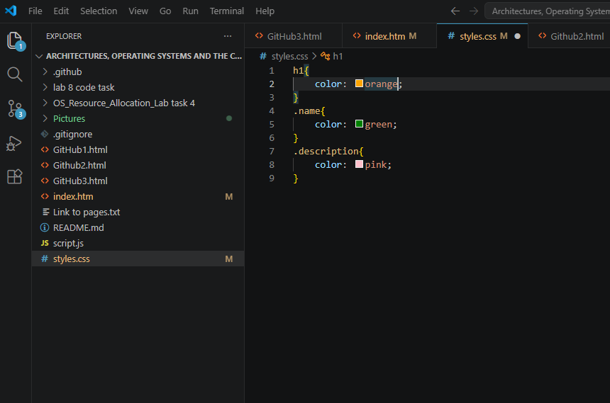
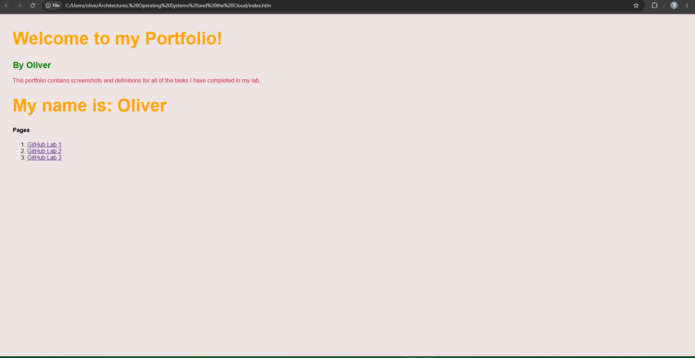
JavaScript can access all my classes correctly and it works fine.
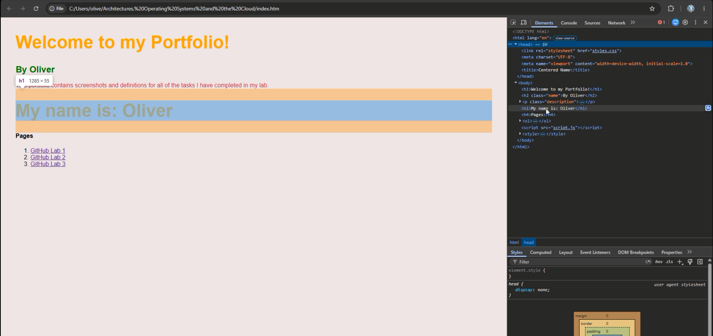
I then created a navigation bar at the top of my portfolio as it looks neater than hyperlinks. It contains links to my portfolio and all of my work so far. I used CSS to make my navigation bar black and to change the text colour, along with creating an effect when you hover over each lab.
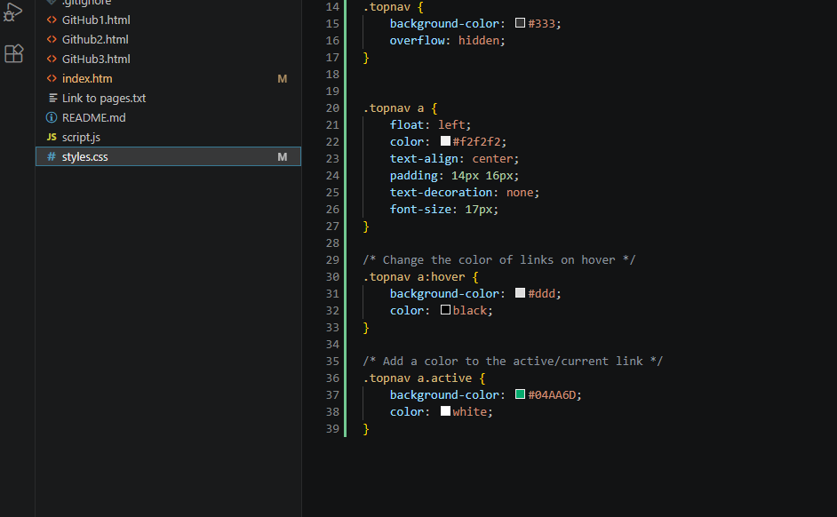
I added a Dark Mode feature to my portfolio by first adding a button to my portfolio. I then created a class in styles.css to change the colour from black to white. In the JavaScript area I then created a toggle dark mode so you can switch it from black to white by pressing the button.
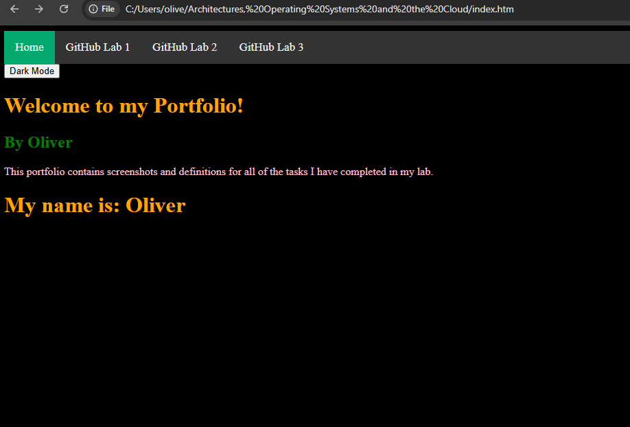
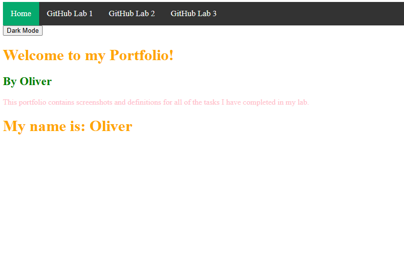
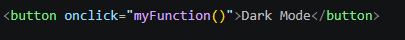
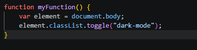
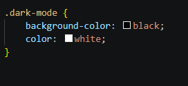